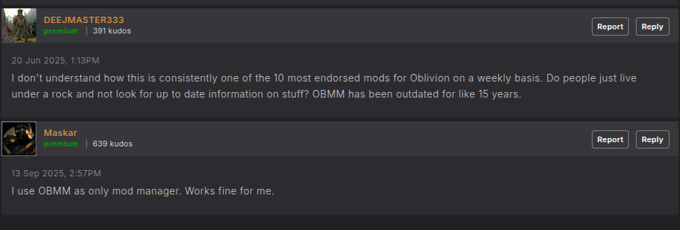

Oblivion is generally one of the simpler games to get working on Linux, even when considering the extensive modding which can go into it. Your copy of Oblivion is likely either from the Steam Store or GOG, legitimate or otherwise. I usually prefer the GOG Edition as while Steam and Proton are very good tools for ensuring your Steam Library runs on Linux, they are not made with modding in mind. In particular, utilizing external programs and other such utilities, such as mod managers, load order organizers, and the like, are not impossible to use, Protontricks exists, but more cumbersome. GOG games are trivial to acquire, can easily be set up in a frontend such as Lutris, and you already bought the game anyways, what is the moral issue?
If you set up the Oblivion this way, using the GOG version with Lutris, the rest is rather trivial. The basic vanilla game is already set up and ready to be, but if this was the only thing, Steam would also be just fine, download and play. Lutris offers the function to "Run EXE within Wine prefix" as an addition launch option, this should be used to launch any external programs which are critical for game. Protonfixes can utilize this function as well, but it is slightly more cumbersome with a Steam install, and the Steam version is not pre-patched with the 4GB address extension, a key stability mod. The main programs which are utilized is the Mod Manager (OBMM), LOOT and BOSS for load order sorting, and xEdit for cleaning saves and making minor adjustments to .esp files.
One may ask, why is OBMM used? That mod manager has not been updated in over a decade and has been superceded by either Mod Organizer 2, or Wyre Bash for Oblivion. To this, I provide the response of one of Oblivion's largest modders.

In all seriousness, OBMM does have utility for working for certain older mods which are only packaged in the OBMM format. Otherwise, the general lower external utility mod load one would place in Oblivion compared to Skyrim (no FNIS/Pandora or BodySlider) makes OBMM generally sufficient for any setup. I am an Oblivion boomer, and I prefer modding like I did more than a decade ago.
xEdit and BOSS/LOOT can be simply run within the prefix with no issues. I generally prefer BOSS for Oblivion load order sorting, as while LOOT is newer, BOSS has always been specifically developed for Oblivion and in my experience does the better job sorting the load order. This said, LOOT does show any mods your setup contains which may have unclean edits and should be cleaned with xEdit.